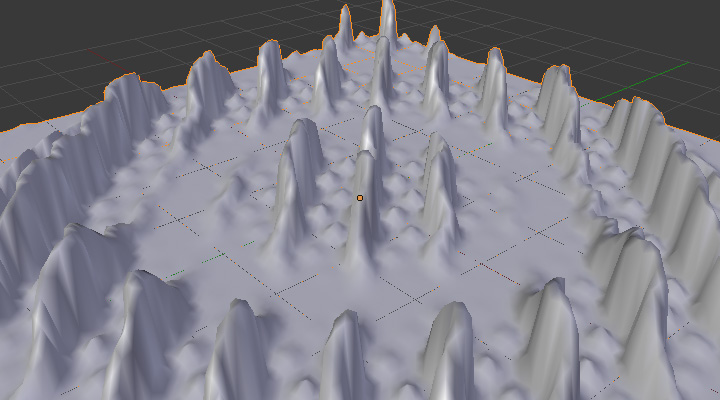

Модифікатор «Мікс Вагомостей Вершин» -- Vertex Weight Mix Modifier¶

Панель модифікатора Vertex Weight Mix.
Цей модифікатор підмішує другу групу вершин (або просте значення) у задіяну групу вершин, використовуючи різні операції.
Quan trọng
Цей модифікатор робить неявне затискання значень вагомостей у стандартний діапазон (від 0.0 до 1.0). Усі значення нижче 0.0 будуть задані як 0.0 та усі значення вище 1.0 будуть задані як 1.0.
Опції¶
- Група Вершин -- Vertex Group A
- Задіяна група вершин.
- Стандартна Вагомість -- Default Weight A
- Стандартна вагомість для призначення усім вершинам, що не знаходяться у даній групі вершин.
- Група Вершин -- Vertex Group B
- Друга група вершин для підмішування у задіяну групу. Залишайте порожнім це поле, якщо ви хочете підмішувати тільки просте значення.
- Стандартна Вагомість -- Default Weight B
- Стандартна вагомість для призначення усім вершинам, що не знаходяться у цій другій групі вершин.
- Режим Міксу -- Mix Mode
Як на вагомості базової групи вершини впливають вагомості іншої групи вершин.
- Заміна -- Replace weights
- Замінює задіяні вагомості вагомостями другої групи.
- Додання -- Add to weights
- Додає значення Group B до Group A.
- Відняття -- Subtract from weights
- Віднімає значення Group B від значень Group A.
- Множення -- Multiply weights
- Множить значення Group B на значення Group A.
- Ділення -- Divide weights
- Ділить значення Group A на значення Group B.
- Різниця -- Difference
- Віднімає менше з двох значень від більшого.
- Усереднення -- Average
- Додає значення між собою, а потім ділить на 2.
- Набір Міксу -- Mix Set
Дає на вибір, які вершини будуть задіяні.
- Усе -- All vertices
- Задіює усі вершини, ігноруючи вміст груп вершин.
- Вершини з групи -- Vertices from group A
- Впливає тільки на вершини, що належать до задіяної групи вершин.
- Вершини з групи -- Vertices from group B
- Впливає тільки на вершини, що належать до другої групи вершин.
- Вершини з однієї групи -- Vertices from one group
- Впливає тільки на вершини, що належать принаймні одній з цих груп вершин.
- Вершини з обох груп -- Vertices from both groups
- Впливає тільки на вершини, що належать до обох цих груп вершин.
Quan trọng
При використанні All vertices, Vertices from group B або Vertices from one group вершини можуть додаватися у задіяну групу вершин.
Опції Впливу/Маски -- Influence/Mask Options¶
- Глобальний Вплив -- Global Influence
Загальний вплив модифікатора (0.0 буде залишати вагомості групи вершин недоторканими, 1.0 -- це стандартний вплив).
Quan trọng
Цей вплив впливає тільки на вагомості, доданню/вилученню вершин у/із групи вершин не перешкоджає задання цього значення як 0.0.
Маска Групи Вершин -- Vertex Group Mask¶
- Маска Групи Вершин -- Vertex Group Mask
- Додаткова група вершин, вагомості якої будуть помножені на значення глобального впливу кожної вершини. Якщо вершина не знаходиться у маскувальній групі вершини, то її вагомість не буде зачеплена.
Маска Текстури -- Texture Mask¶
- Маска Текстури -- Texture Mask
Додаткова текстура, значення якої будуть множиться на значення глобального впливу для кожної вершини.
Це стандартний блок даних -- data-block керування текстурами. При установленні його показуються інші устави:
- Координати Текстури -- Texture Coordinates
Як текстура розкладається на сіть.
- Локально -- Local
- Використовує локальні координати вершини.
- Глобально -- Global
- Вживає координати вершини у глобальному просторі.
- Об'єкт -- Object
Використовує координати вершини у просторі іншого об'єкта.
- Об'єкт -- Object
- Об'єкт для використання як орієнтир для розкладки по Об'єкту.
- UV
Використовує координати карти UV.
- Карта UV -- UV Map
- Карта UV, використовувана для розкладки по UV.
- Вжити Канал -- Use Channel
Який канал використовувати як джерело фактора вагомості.
- Червоний -- Red / Зелений -- Green / Синій -- Blue / Альфа -- Alpha
- Значення одного з колірних каналів.
- Інтенсивність -- Intensity
- Усереднення каналів RGB (якщо значення RGB (1.0, 0.0, 0.0) є 0.33).
- Значення -- Value
- Найвище значення з каналів RGB (якщо значення RGB (1.0, 0.0, 0.0) є 1.0).
- Відтінок -- Hue
- Використовує значення відтінку зі стандартного круга кольорів (наприклад, синій має вище значення відтінку, ніж жовтий).
- Насиченість -- Saturation
- Вживає значення насиченості (наприклад, значення чистого червоного є 1.0, сірого - 0.0).
Ghi chú
Усі зі згаданих вище каналів є гамма-коректовані, за винятком Intensity.
Ghi chú
Ви можете переглядати модифіковані вагомості у режимі малювання вагомостей Weight Paint Mode. Це також неявно передбачає, що вам доведеться вимкнути цей модифікатор Vertex Weight Mix Modifier, якщо ви хочете бачити оригінальні вагомості групи вершин, які ви редагуєте.
Приклад¶
Використання текстури та кривої розкладання
Тут ми збираємося створити певний вид дивної чужинської хвилі (так, ще один приклад з модифікатором Wave... але він високо візуальний; легше побачити ефекти групи вершин на ньому...).
Тому, як і попередньо, додамо сіть з кількість 100×100 вершин. Цей раз додамо групу вершин, але без призначення жодних вершин в неї -- ми зробимо це динамічно.
Додамо перший модифікатор Vertex Weight Mix, задамо поле Vertex Group A з Default Weight A як 0.0, та задамо Default Weight B як 1.0.
Залишимо Mix Mode як Replace weights та виберемо All vertices для Mix Set. Таким чином, усі вершини задіяні. Оскільки жодна з них не є у задіяній групі вершин, то вони усі мають стандартну вагомість як 0.0, яка замінюється стандартною вагомістю другої групи зі значенням 1.0. І всі ці вершини також додаються у задіяну групу вершин.
Тепер, виберемо або створимо маскувальну текстуру. Значення цієї текстури будуть керувати тим, наскільки «друга вагомість» в 1.0. замінюватиме «першу вагомість» в 0.0... Іншими словами, вони беруться як значення вагомостей!
Ви можете далі вибрати, які використовувати координати текстури та канал. Залиште розкладання зі стандартною опцією Local та пограйтеся з різними каналами...

Використання Intensity. |

Використання Red. |

Використання Saturation. |
Не забудьте додати модифікатор Wave та вибрати на ньому вашу групу вершин!
Ви можете вживати вагомості, створені таким шляхом, безпосередньо, але якщо ви хочете погратися з розкладанням по кривій, то ви повинні додати відомий модифікатор Vertex Weight Edit та увімкнути на ньому Custom Curve.
Стандартно, це лінеарне, прямолінійне один-на-один розкладання -- іншими словами, це нічого не робить! Змініть щось, як на Ілюстрації Власна крива розкладання., де розкладається (0.0, 0.5) на (0.0, 0.25) та (0.5, 1.0) на (0.75, 1.0), це продукує лише вагомості нижче 0.25 та вище 0.75: це створить величезні «стіни» у хвилях...

Налаштована користувачем крива розкладання. |
Власне Розкладання вимкнене. |

Власне Розкладання увімкнене. |
{kind=link}
The blend-file, TEST_4 scene.